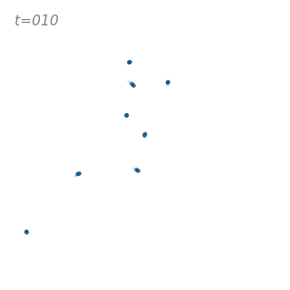

N-Body Simulation#
Below we have a basic implementation of an N-body simulation. We will use this as a baseline to compare against a vectorized/Cupy/multiprocessing implementations.
There are two main functions:
the
newtonian_acceleration(pos, mass, G, softening)which calculates the acceleration of each particle due to the gravitational force from all other particles. This is the most computationally expensive part of the simulation.the
nbody_runner()which runs the simulation for a given number of particles and time steps.
Show code cell content
# Some utils
import matplotlib.pyplot as plt
import imageio
import os
import glob
import re
from datetime import datetime
import numpy as np
from tqdm.auto import trange, tqdm
import warnings
from matplotlib import rcParams
import colorsys
from matplotlib.colors import ColorConverter, LinearSegmentedColormap
rcParams.update({"xtick.major.pad": "7.0"})
rcParams.update({"xtick.major.size": "7.5"})
rcParams.update({"xtick.major.width": "1.5"})
rcParams.update({"xtick.minor.pad": "7.0"})
rcParams.update({"xtick.minor.size": "3.5"})
rcParams.update({"xtick.minor.width": "1.0"})
rcParams.update({"ytick.major.pad": "7.0"})
rcParams.update({"ytick.major.size": "7.5"})
rcParams.update({"ytick.major.width": "1.5"})
rcParams.update({"ytick.minor.pad": "7.0"})
rcParams.update({"ytick.minor.size": "3.5"})
rcParams.update({"ytick.minor.width": "1.0"})
rcParams.update({"font.size": 20})
rcParams.update({"xtick.top": True})
rcParams.update({"ytick.right": True})
rcParams.update({"xtick.direction": "in"})
rcParams.update({"ytick.direction": "in"})
def collect_runtimes(func, n_vals, n_trials=2, kwargs={}) -> np.ndarray:
"""
Collect runtimes for a function with different input sizes
Parameters
----------
func : function
Function to run
n_vals : list
List of input sizes
n_trials : int, optional
Number of trials to run, by default 2
kwargs : dict, optional
Keyword arguments to pass to func, by default {}
Returns
-------
np.ndarray
Array of runtimes with shape (len(n_vals), n_trials)
"""
warnings.filterwarnings("error")
runtimes = np.zeros((len(n_vals), n_trials))
for npart_i in trange(len(n_vals), desc="Collecting runtimes"):
for trial_i in range(n_trials):
start = datetime.now()
n = n_vals[npart_i]
try:
func(N=n, **kwargs)
runtimes[npart_i, trial_i] = get_runtime(start)
except RuntimeWarning:
runtimes[npart_i, trial_i] = np.nan
return runtimes
def get_runtime(start: datetime):
return (datetime.now() - start).total_seconds()
def make_gif(im_regex, outname, duration=0.1):
imgs = glob.glob(im_regex)
imgs = sorted(imgs, key=lambda x: int(re.findall(r"\d+", x)[0]))
frames = [imageio.imread_v2(f) for f in imgs]
imageio.mimsave(outname, frames, duration=duration)
for f in imgs:
os.remove(f)
def remove_spines(ax):
"""Remove all spines and ticks from an axis"""
for spine in ax.spines.values():
spine.set_visible(False)
ax.set_yticks([])
ax.set_xticks([])
def scale_color_brightness(color, scale_l=1.0):
rgb = ColorConverter.to_rgb(color)
# convert rgb to hls
h, l, s = colorsys.rgb_to_hls(*rgb)
# manipulate h, l, s values and return as rgb
return colorsys.hls_to_rgb(h, min(1, l * scale_l), s=s)
def make_colormap(color):
rgb = [
(i, scale_color_brightness(color, scale_l=i + 1)) for i in np.linspace(0, 1, 30)
]
cmap = LinearSegmentedColormap.from_list(f"custom_{color}", colors=rgb, N=256)
cmap = cmap.reversed()
return cmap
Basic “Loop” Implementation#
from datetime import datetime
from tqdm.auto import trange
from typing import List, Union
import numpy as np
import matplotlib.pyplot as plt
import os
import random
G = 1.0 # Gravitational Constant
OUTDIR = 'orbit_out/'
### Basic Lists ###
def newtonian_acceleration_basic(pos, mass, G, softening):
# positions r = [x,y,z] for all particles
x = [p[0] for p in pos]
y = [p[1] for p in pos]
z = [p[2] for p in pos]
# matrix that stores all pairwise particle separations: r_j - r_i
dx = [[x[j] - x[i] for j in range(len(pos))] for i in range(len(pos))]
dy = [[y[j] - y[i] for j in range(len(pos))] for i in range(len(pos))]
dz = [[z[j] - z[i] for j in range(len(pos))] for i in range(len(pos))]
# matrix that stores 1/r^3 for all particle pairwise particle separations
inv_r3 = [
[
(dx[i][j] ** 2 + dy[i][j] ** 2 + dz[i][j] ** 2 + softening ** 2)
for j in range(len(pos))
]
for i in range(len(pos))
]
for i in range(len(pos)):
for j in range(len(pos)):
if inv_r3[i][j] > 0:
inv_r3[i][j] = inv_r3[i][j] ** (-1.5)
ax = [G * sum(dx[i][j] * inv_r3[i][j] for j in range(len(pos))) * mass[i] for i in range(len(pos))]
ay = [G * sum(dy[i][j] * inv_r3[i][j] for j in range(len(pos))) * mass[i] for i in range(len(pos))]
az = [G * sum(dz[i][j] * inv_r3[i][j] for j in range(len(pos))) * mass[i] for i in range(len(pos))]
# pack together the acceleration components
a = [(ax[i], ay[i], az[i]) for i in range(len(pos))]
return a
def nbody_runner_basic(
N=5,
tEnd=5.0,
dt=0.01,
softening=0.1,
random_seed=17,
max_runtime=5,
verbose=True,
):
""" N-body simulation """
random.seed(random_seed)
# Initialisation
mass = [20.0 / N] * N # total mass of particles is 20
pos = [[random.random() for _ in range(3)] for _ in range(N)] # randomly selected positions and velocities
vel = [[random.random() for _ in range(3)] for _ in range(N)]
t = 0
Nt = int(np.ceil(tEnd / dt))
runtime_start = datetime.now()
vel_mean = [sum(m * v for m, v in zip(mass, v)) / sum(mass) for v in zip(*vel)]
vel = [[v[i] - vel_mean[i] for i in range(3)] for v in vel]
acc = newtonian_acceleration_basic(pos, mass, G, softening)
pos_save = [[[0.0 for _ in range(3)] for _ in range(N)] for _ in range(Nt + 1)]
for i in range(N):
for j in range(3):
pos_save[i][j][0] = pos[i][j]
# Simulation loop
for i in trange(Nt, disable=not verbose, desc="Running simulation"):
vel = [[v[j] + acc[i][j] * dt / 2.0 for j in range(3)] for i, v in enumerate(vel)]
pos = [[pos[i][j] + vel[i][j] * dt for j in range(3)] for i in range(N)]
acc = newtonian_acceleration_basic(pos, mass, G, softening)
vel = [[v[j] + acc[i][j] * dt / 2.0 for j in range(3)] for i, v in enumerate(vel)]
t += dt
for k in range(N):
for j in range(3):
pos_save[i][k][j] = pos[k][j]
runtime = get_runtime(runtime_start)
if runtime > max_runtime:
warnings.warn(f"Runtime exceeded {max_runtime} seconds. Stopping simulation.")
break
pos_save = np.array(pos_save)
pos_save = np.transpose(pos_save, (1, 2, 0))
return pos_save
# test that this actually works
%timeit -r 1 -n 1 nbody_runner_basic(N=10, random_seed=4, verbose=False, tEnd=1)
32.8 ms ± 0 ns per loop (mean ± std. dev. of 1 run, 1 loop each)
Lets make a plot/gif of the particle positions
def plot_particles(positions: Union[List, np.ndarray], n_time_total: int = 0, color='tab:blue'):
"""Plot the positions of particles in 2D
Parameters
----------
positions : Union[List, np.ndarray]
List of positions of particles. Should be of shape (n_particles, {xyz}, n_time).
n_time_total : int, optional
Total number of time steps (used for plotting the trail), by default 0
color : str, optional
Color of the particles, by default 'tab:blue'
"""
n_part, _, n_time = positions.shape
if n_time_total == 0:
n_time_total = n_time
fig = plt.figure(figsize=(4, 4), dpi=80)
ax = fig.gca()
# plot the particle orbits
idx_end = np.argmax(np.where(np.sum(positions, axis=(0, 1)) != 0)[0])
idx_start = np.max([int(idx_end - 0.1 * n_time_total), 0])
nidx = idx_end - idx_start
max_size = 10
ax.scatter(
positions[:, 0, idx_end], positions[:, 1, idx_end],
s=max_size, color=color, ec='k', lw=0.5
)
# plot the trail
if nidx > 1:
ms = np.geomspace(1e-4, max_size, nidx)
# set ms < 0.05 to 0
mask = ms < 0.05
ms[mask] = 0
# colors = np.array([make_colormap('tab:blue', 'white')(i) for i in np.linspace(0, 1, nidx)])
ax.scatter(
positions[:, 0, idx_start:idx_end], positions[:, 1, idx_start:idx_end],
s=[ms] * n_part, zorder=-10,
c=[ms] * n_part,
cmap=make_colormap(color),
)
ax.set_xlim(-2, 2)
ax.set_ylim(-2, 2)
ax = plt.gca()
remove_spines(ax)
ax.set_aspect('equal', 'box')
# remove white border around figure
fig.tight_layout(pad=0)
return fig
def plot_particle_gif(pos, outdir, dur):
os.makedirs(outdir, exist_ok=True)
n_part, _, n_time = pos.shape
for i in trange(10, n_time, 10, desc='Making gif'):
fig = plot_particles(pos[:, :, 0:i], n_time_total=n_time, color='tab:blue')
# add textbox in top left corner
ax = plt.gca()
ax.text(
0.05, 0.95,
f't={i:003d}', transform=ax.transAxes,
fontsize=14, verticalalignment='top',
fontstyle='italic',
alpha=0.5,
)
fig.savefig(f'{outdir}/orbit_{i:003d}.png')
plt.close(fig)
make_gif(f'{outdir}/orbit_*.png', f'{outdir}/orbit.gif', duration=dur)
print(f'Gif saved to {outdir}/orbit.gif')
positions = nbody_runner_basic(N=3, random_seed=1, tEnd=7)
plot_particle_gif(positions, outdir='out_basic', dur=2)
Gif saved to out_basic/orbit.gif

Numpy-Vectorized Implementation#
Lets swap some loops in for some numpy vectorized statements.
I've left some unvectorized statements for you to optimize and try and vectorize yourself 😊.
def newtonian_acceleration_np(pos, mass, G, softening):
# positions r = [x,y,z] for all particles
x = pos[:, 0:1]
y = pos[:, 1:2]
z = pos[:, 2:3]
# matrix that stores all pairwise particle separations: r_j - r_i
dx = x.T - x
dy = y.T - y
dz = z.T - z
# matrix that stores 1/r^3 for all particle pairwise particle separations
inv_r3 = (dx ** 2 + dy ** 2 + dz ** 2 + softening ** 2)
inv_r3[inv_r3 > 0] = inv_r3[inv_r3 > 0] ** (-1.5)
# pack together the acceleration components
return G * np.hstack((
np.matmul(dx * inv_r3, mass),
np.matmul(dy * inv_r3, mass),
np.matmul(dz * inv_r3, mass)
))
def nbody_runner_np(
N: int = 5,
tEnd: float = 10.0,
dt: float = 0.01,
softening: float = 0.1,
random_seed: int = 17,
max_runtime: int = 5,
verbose: bool = True,
):
""" N-body simulation """
# Initialisation
np.random.seed(random_seed)
mass = 20.0 * np.ones((N, 1)) / N # total mass of particles is 20
pos = np.random.randn(N, 3) # randomly selected positions and velocities
vel = np.random.randn(N, 3)
t = 0
Nt = int(np.ceil(tEnd / dt))
runtime_start = datetime.now()
vel -= np.mean(mass * vel, 0) / np.mean(mass)
acc = newtonian_acceleration_np(pos, mass, G, softening)
pos_save = np.zeros((N, 3, Nt + 1))
pos_save[:, :, 0] = pos
# Simulation loop
for i in trange(Nt, desc="Running simulation", disable=not verbose):
vel += acc * dt / 2.0
pos += vel * dt
acc = newtonian_acceleration_np(pos, mass, G, softening)
vel += acc * dt / 2.0
t += dt
pos_save[:, :, i + 1] = pos
runtime = get_runtime(runtime_start)
if runtime > max_runtime:
warnings.warn(f"Runtime exceeded {max_runtime} seconds. Stopping simulation.")
break
return pos_save
# test that this actually works
print("Vectorized time:")
%timeit -r 5 -n 5 nbody_runner_np(N=5, random_seed=4, verbose=False, tEnd=1)
print("Basic 'Loop' time:")
%timeit -r 5 -n 5 nbody_runner_basic(N=5, random_seed=4, verbose=False, tEnd=1)
Vectorized time:
10.9 ms ± 1.68 ms per loop (mean ± std. dev. of 5 runs, 5 loops each)
Basic 'Loop' time:
13.8 ms ± 4.81 ms per loop (mean ± std. dev. of 5 runs, 5 loops each)
Runtime comparison#
Lets make a plot of the runtime for different numbers of particles using the two different methods
def plot_runtimes(n_particles, n_trials=3):
kwargs = dict(verbose=False, max_runtime=5)
vectorized = collect_runtimes(nbody_runner_np, n_particles, n_trials, kwargs=kwargs)
basic = collect_runtimes(nbody_runner_basic, n_particles, n_trials, kwargs=kwargs)
fig, ax = plt.subplots(figsize=(5,3.5))
ax.set_yscale('log')
for i, (data, label) in enumerate(zip([basic, vectorized], ['Basic', 'Vectorized'])):
ax.plot(n_particles, np.quantile(data, 0.5, axis=1), label=label, color=f'C{i}')
ax.fill_between(
n_particles,
np.quantile(data, 0.05, axis=1),
np.quantile(data, 0.95, axis=1),
alpha=0.3,
color=f'C{i}',
)
ax.set_xlabel('Number of Particles')
ax.set_ylabel('Runtime (s)')
ax.legend(frameon=False, fontsize=14)
plt.tight_layout()
return fig
# Here n-trials is the number of times we repeat each simulation to get an average runtime
fig = plot_runtimes(n_particles=np.linspace(10, 40, 10,dtype=int), n_trials=4)
fig.savefig('nbody_runtimes.png')
Lets make a slightly longer gif with more particles using the vectorized implementation.
positions = nbody_runner_np(N=10, random_seed=4, tEnd=5, verbose=True)
Gif saved to out_nb_np/orbit.gif
plot_particle_gif(positions, outdir='out_nb_np', dur=3)

Questions#
What will happen to the speed of the vectorized implementation as the number of particles increases? Why?
What is the runtime complexity of the basic implementation? What about the vectorized implementation?
Can you think of any other ways to speed up the simulation? Plot the runtimes.
Can you make a
GPUimplementation usingcupy? (feel free to paste the vectorized code in chatGPT and ask it for help).
Bonus:
Can you make a
GPUimplementation such that the simulation runs inO(N)time?
I’ll release the answers after the workshop. (Please remind me if i dont lol)
Share your plots/code/cool GIFs down below (in the website version of this page)! 😄